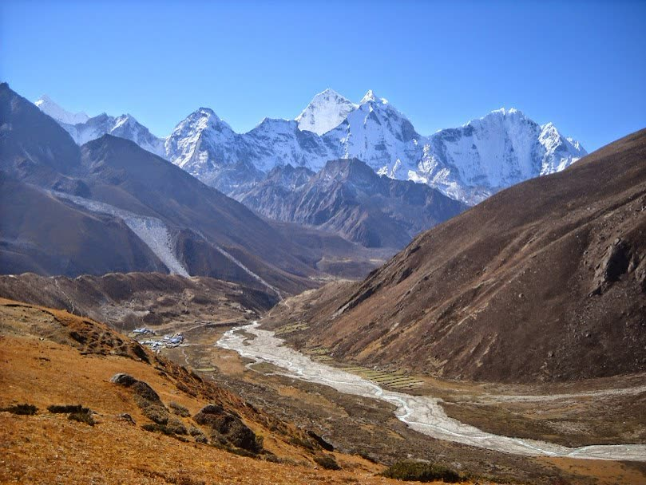
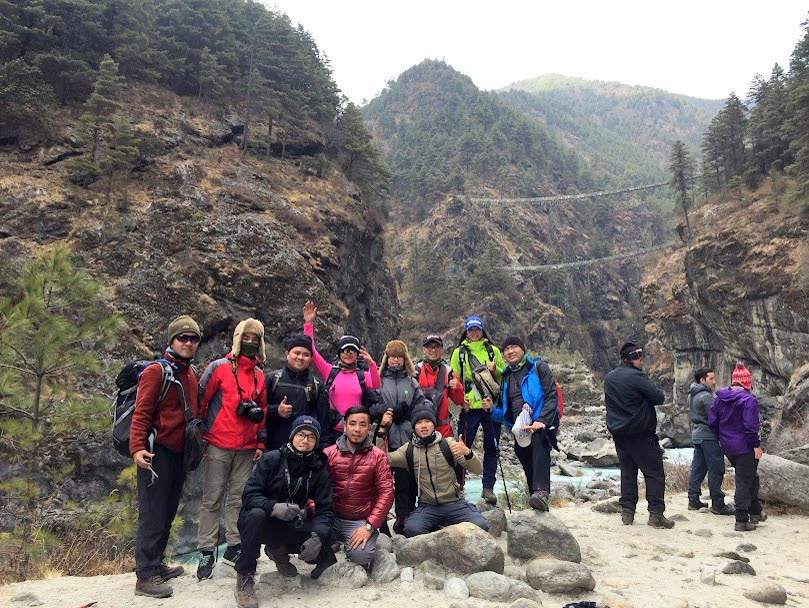
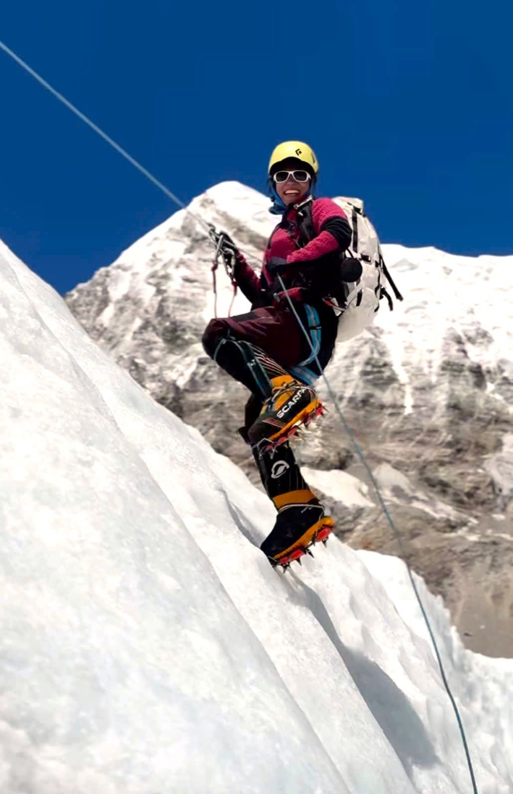
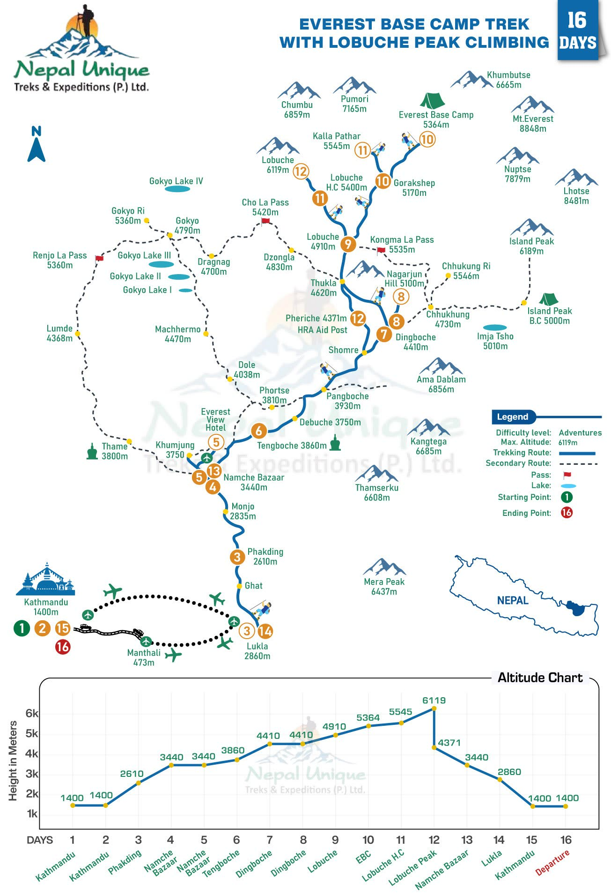

Lobuche Peak Climbing – 19 Days to 6,119m
The Lobuche Peak Climbing is one of the most rewarding alpine adventures in the Everest Region Trekking, combining the excitement of a high-altitude summit with the iconic Everest Base Camp Trek Route. Standing at 6,119 meters (20,075 feet), Lobuche East Peak offers breathtaking panoramic views of some of the world's highest mountains, including Mount Everest, Lhotse, Nuptse, Ama Dablam, Makalu, and Pumori.





Key Trip Facts
Trek Overview
Trip Highlights
Lobuche Peak Climbing Introduction
Lobuche Peak Climbing is a 19-day Himalayan adventure that combines the Everest Base Camp trek with the ascent of Lobuche East Peak (6,119m/20,075ft). The journey takes you through the heart of the Khumbu region, including Namche Bazaar, Tengboche, Dingboche, Everest Base Camp and Kala Patthar, before the summit attempt on Lobuche East.
The climb involves glacier travel, steep snow and ice sections, and the use of mountaineering equipment such as crampons, an ice axe, harness and fixed ropes. Previous peak-climbing experience is helpful, but our professional climbing guides provide pre-climb training and support throughout the expedition.
With acclimatization days, a dedicated contingency day and experienced Sherpa climbing support, this itinerary is designed for physically fit trekkers who want to experience their first major Himalayan summit while exploring the Everest region.
Lobuche Peak Climbing Overview
The Lobuche Peak Climbing is one of the most rewarding alpine adventures in the Everest Region Trekking, combining the excitement of a high-altitude summit with the iconic Everest Base Camp Trek Route. Standing at 6,119 meters (20,075 feet), Lobuche East Peak offers breathtaking panoramic views of some of the world's highest mountains, including Mount Everest, Lhotse, Nuptse, Ama Dablam, Makalu, and Pumori. Whether you're an experienced trekker looking to step into mountaineering or an aspiring climber preparing for bigger Himalayan expeditions, this journey delivers the perfect balance of trekking, technical climbing, and unforgettable mountain scenery.
Located in Lobuche Peak Nepal, this spectacular 6,119m Peak is classified as a trekking peak by the Nepal Mountaineering Association, making it one of the most popular choices for Peak Climbing in Nepal. Although it requires the use of crampons, ropes, an ice axe, and other basic climbing equipment, the climb is achievable for physically fit adventurers with proper preparation and guidance. A professional Sherpa Guide and an experienced Nepal Climbing Guide play a vital role in ensuring safety while helping climbers build confidence on the mountain.
A typical Lobuche Peak Expedition begins with the scenic Kathmandu to Lukla flight, followed by a classic trek through the heart of Sagarmatha National Park. Along the way, you'll pass traditional Sherpa villages such as Namche Bazar, Tengboche, Dingboche, and Lobuche, where you'll experience the rich culture, warm hospitality, and ancient Buddhist traditions of the Khumbu region. Many itineraries also include a visit to Everest Base Camp Trek with Lobuche Peak and the famous Kala Patthar viewpoint, allowing climbers to enjoy two iconic Himalayan experiences in a single adventure.
For trekkers searching for an Island Peak Climbing Alternative, Lobuche East Climbing is often considered the more scenic and technically engaging option. The summit ridge provides a thrilling alpine experience while rewarding climbers with unmatched views of the Everest massif. This makes it an excellent choice for anyone seeking genuine Himalayan Climbing and Alpine Climbing Nepal without committing to a major expedition.
Our carefully designed Lobuche Peak Itinerary includes gradual altitude gain, dedicated acclimatization days, and pre-climb training to maximize your chances of reaching the summit safely. Every expedition is led by experienced local climbing professionals who understand the unique challenges of high-altitude mountaineering. As a trusted Trekking Agency in Nepal, we provide certified climbing guides, quality equipment support, permit assistance, comfortable accommodation, and personalized service throughout the journey.
The Best Time for Lobuche Peak Climbing is during the spring season (March to May) and autumn season (September to November), when stable weather, clear skies, and favorable climbing conditions offer the highest summit success rates. During these months, the Everest region showcases spectacular mountain views, colorful rhododendron forests in spring, and crisp Himalayan landscapes in autumn.
The overall Lobuche Peak Cost depends on several factors, including trip duration, group size, accommodation, guide services, transportation, and equipment. Every climber must also obtain the required Lobuche Peak Permit, along with the Khumbu Pasang Lhamu Rural Municipality Permit and Sagarmatha National Park Entry Permit. Our team handles all permit arrangements, allowing you to focus entirely on your adventure.
More than simply reaching a summit, Lobuche Peak Climbing is a complete Himalayan journey that combines Trekking in Nepal, Hiking in Nepal, cultural exploration, and high-altitude adventure. Whether you're planning your first Nepal Peak Climbing experience, preparing for a future Everest Expedition in Nepal, or looking for a memorable Nepal Adventure Tour, this expedition offers an exceptional opportunity to develop mountaineering skills while exploring one of the most spectacular mountain landscapes on Earth.
Join us for a professionally guided, Guided Peak Climbing Nepal experience and discover why Lobuche East remains one of the finest Nepal Unique Treks and Expedition in Nepal adventures for climbers seeking challenge, achievement, and the unforgettable beauty of the Himalayas.
Major Highlights of Lobuche Peak Climbing
Summit Lobuche East Peak (6,119m)
Reach the breathtaking summit of Lobuche East Peak, one of the most rewarding trekking peaks in Nepal, and enjoy spectacular panoramic views of Everest, Lhotse, Nuptse, Ama Dablam, Pumori, Makalu, and other Himalayan giants.
Adventure in the Everest Region
Follow the legendary Everest trail through the Khumbu region, experiencing the natural beauty and cultural richness that make Everest Region Peak Climbing one of the world’s most famous mountain adventures.
Combine Everest Base Camp with Lobuche Peak
Experience the unforgettable journey of Everest Base Camp with Lobuche Peak, allowing you to visit the base of Mount Everest before taking on the challenge of a Himalayan summit.
Scenic Kathmandu to Lukla Flight
Begin your adventure with the thrilling Kathmandu to Lukla flight, offering incredible aerial views of Nepal’s hills, valleys, and snow-covered Himalayan peaks.
Explore Traditional Sherpa Villages
Discover the unique culture, traditions, and hospitality of the Sherpa people while visiting famous mountain settlements such as Namche Bazar, Tengboche, Dingboche, and Lobuche.
Experience Authentic Himalayan Climbing
Take part in a true alpine adventure involving glacier travel, rope techniques, snow climbing, and summit preparation under the guidance of an experienced Sherpa Guide and professional Nepal Climbing Guide.
Perfect Trekking Peak for Aspiring Climbers
Lobuche East Climbing is an ideal choice for adventure seekers looking to gain high-altitude mountaineering experience before attempting more technical Himalayan expeditions.
Professional Guided Peak Climbing Experience
Enjoy a safe and well-organized expedition with experienced climbing leaders, quality equipment support, acclimatization planning, and reliable logistics from a trusted Trekking Agency in Nepal.
Spectacular Himalayan Views Throughout the Journey
Witness some of the world's most beautiful mountain scenery, including Everest, Lhotse, Cho Oyu, Makalu, Ama Dablam, and countless surrounding peaks.
A Complete Nepal Adventure Experience
Combine Hiking in Nepal, cultural exploration, mountain climbing, and breathtaking landscapes into one unforgettable Nepal Adventure Tour.
Best Alternative to Island Peak Climbing
For climbers seeking a different challenge, Lobuche Peak is an excellent Island Peak Alternative, offering a more remote feel and a thrilling summit experience.
Suitable Preparation for Future Expeditions
The experience gained during Lobuche Peak Nepal climbing helps build confidence and skills for future Mountaineering Nepal adventures and larger expeditions.
Best Time for Lobuche Peak Climbing
Choosing the best time for Lobuche Peak Climbing is essential for a safe and successful summit experience. Located in the Everest region of Nepal, Lobuche East Peak (6,119m) requires favorable weather conditions, stable snow, clear visibility, and manageable temperatures. The two best seasons for the Lobuche Peak Expedition are spring (March to May) and autumn (September to November), when the Himalayan weather is most suitable for trekking and climbing.
Spring Season (March to May) – Best Season for Lobuche Peak Climbing
Spring is considered one of the best times for Lobuche Peak Climbing because of stable weather, warmer temperatures, and excellent mountain visibility. During this season, climbers can enjoy clear views of Everest, Lhotse, Nuptse, Ama Dablam, Pumori, and other Himalayan peaks.
The trails of the Everest region become lively with blooming rhododendron forests, and the climbing conditions on Lobuche East Climbing routes are generally favorable. The warmer days make trekking from Lukla to Namche Bazar, Dingboche, and Lobuche more comfortable, while the summit period usually offers better chances of successful climbing.
Autumn Season (September to November) – Most Popular Season
Autumn is another excellent season for Lobuche Peak Nepal climbing and is widely considered the most popular trekking and expedition period in Nepal. After the monsoon season, the skies become clear, the air is fresh, and the mountain views are spectacular.
This season is perfect for combining Everest Base Camp with Lobuche Peak, as trekkers and climbers can enjoy the famous Everest trail under some of the year's best conditions. The stable weather, dry trails, and excellent visibility make autumn a favorite choice for both beginners and experienced climbers.
Ideal conditions for Himalayan Climbing and Mountaineering Nepal
Winter Season (December to February)
Winter climbing is possible for experienced mountaineers, but it is considered more challenging due to extremely cold temperatures, strong winds, and heavier snowfall at higher elevations. The summit conditions of the 6119m Peak can become difficult, requiring advanced preparation and greater flexibility.
However, winter offers peaceful trails, fewer trekkers, and stunning snow-covered landscapes for those seeking a more isolated Nepal Adventure Tour experience.
Monsoon Season (June to August)
The monsoon season is generally not recommended for Lobuche Peak Climbing because of frequent rainfall, cloudy weather, slippery trails, and limited mountain visibility. Flight delays between Kathmandu and Lukla are also more common during this period.
Recommended Months for Lobuche Peak Climbing
Best overall months:
- April to May (Spring)
- October to November (Autumn)
These months provide the best combination of:
- Favorable climbing weather
- Safe trekking conditions
- High mountain visibility
- Better summit success opportunities
With proper acclimatization, a well-planned Lobuche Peak Itinerary, and support from an experienced Sherpa Guide and professional Nepal Climbing Guide, climbers can enjoy a safe and memorable journey to the summit of Lobuche East Peak.
For adventure seekers looking for a challenging yet achievable Trekking Peak Nepal experience, Lobuche Peak Climbing offers the perfect combination of trekking, culture, and high-altitude alpine adventure in the heart of the Everest region.
Lobuche Peak Climbing – 19 Days to 6,119m Itinerary: Day by Day
19 Days program for Lobuche Peak Climbing – 19 Days to 6,119m. Daily timings and sequences remain flexible according to weather, flight operations, and group pace.
Day 1: Arrival in Kathmandu International Airport 1400 m, 6 km drive to Hotel in Thamel
Approx. 1,400 m / 4,593 ft
Arrive in Kathmandu, Nepal Unique Treks staff will welcome you in Nepal, and transfer to your hotel, If you arrive early day in Kathmandu use the spare time to explore the vibrant city, visit cultural sites, and make necessary preparations for the trek.
Day 2: Kathmandu Valley Sightseeing and trip preparation, 1400 m, 6 hrs
Approx. 1,400 m / 4,593 ft
After Breakfast meet with the Tour guide and complete our trek and Lobuche Peak Climbing official agreements. Start Sightseeing in Kathmandu Valley and visit Swayambhunath, Bouddhanath, Pashupatinath ( Hindu Temple), and Patan Durbar Squire. Drive back to hotel Early afternoon then preparation trekking and climbing gear. Overnight stay at Themel.
Day 3: Drive from Kathmandu to Ramechhap 138 km, 5 hrs, Fly to Lukla (2,860m) Trek to Phakding (2,610m) 7.5 km, 4 hours
Approx. 2,860 m / 9,383 ft
1 Am drive from Kathmandu to Ramechhap, it will be 138 km and 5/6 hrs. Then 20 m mountain scenice flight to Lukla 2850 m. Arrive in Lukla which is gatewaya to the Mt Everest. Meeting with local sherpa, Trek to Phakding Village 2610m, it takes 4/5 hrs along the Dudhkosi River and via local sherpa village. Overnight stay in Phakding.
Day 4: Trek to Namche Bazar (3,440m/11,286ft), 12 km and 6/7 hrs
Approx. 3,440 m / 11,286 ft
After breakfast trek continues along the Dudh Koshi River, Thorough Manju, and other Sherpa villages. Cross-suspension bridges. 6/7 hrs Trek and reach Namche Bazaar, the main trading center and hub for trekkers in the Khumbu region. You will like the settlement of Namche Bazaar. It will be a wonderful stay with magnificent Mountain View
Day 5: Acclimatization Day and Excursion around Namche 3440 m
Approx. 3,440 m / 11,286 ft
Acclimate to the altitude by exploring Namche Viewpoint and hiking to Everest View Hotel or Khumjung Village higher elevations for panoramic views of Everest, Lhotse, and Ama Dablam and others peak surrounding there.
Day 6: Trek to Tengboche (3,860m/12,664ft), 9 km and 6 hrs
Approx. 3,870 m / 12,697 ft
After Breakfast in Hotel walk through forests and enjoy views of Mt. Everest, Nuptse, and Lhotse. The day is over with magnificent mountain views. In the evening it gets dark Visit Tengboche Monastery, one of the most significant Buddhist Monastery in the region. You may pray for a successful trip offering a butter lamp and some donation makes purify your soul and receive good luck from the Monastery.
Day 7: Trek to Dingboche (4,410m/14,469ft), 11 km and 6 hrs
Approx. 4,360 m / 14,304 ft
You will enjoy the morning view of sunrise with the Mt Everest. After breakfast descend to Debuche village and cross the Imja River, Tea break in Pangbuchhe village where many record holder Sherpa also enjoy breathtaking views of Ama Dablam view from the Teashop. Lunch break in Somare then trek continue to Dingbuchhe.
Day 8: Acclimatization Day in Dingboche 4410 m
Approx. 4,360 m / 14,304 ft
Today, most of the people say rest day in Dingbuchhe but we say Acclimatization day. After breakfast hike to Nagarjun Hill or Chukkung Ri for better acclimatization. And hike back to the Hotel for lunch. After that, you may have free time to explore around Diuchhe village. Take a shower, do laundry, and, rest of time enjoy in a coffee shop.
Day 9: Trek to Lobuche (4,910m/16,109ft), 8 km, and 6 hrs
Approx. 4,910 m / 16,109 ft
Early in the morning take a breakfast, then head towards Lobuche, passing through the memorial of Everest Climbers monuments. The monument belongs to the Everest Climbers who lost their lives on Everest during the Expeditions.
Day 10: Trek to Gorakshep 5180 m, and visit to Everest Base Camp (5,364m/17,598ft), 12 km, and, 9/10 hrs
Approx. 5,180 m / 16,995 ft
Trek continues through ridge of khumbu Glacier and check in Guesthouse in Gorakshep 5180 m. After Lunch Trek to Mt Everest Base Camp 5364 m, enjoy the iconic location, and then return to Gorakshep for the night.
Day 11: Hike to Kala Patthar (5,545m/18,192ft) and trek to Lobuche 12 km and 7 hrs
Approx. 4,910 m / 16,109 ft
Early in the morning 4 am ascent to Kalapatthar (5,545m/18,192ft), for stunning sunrise views of Everest and surrounding snow peaks. Trek back to Hotel and take breakfast Then Descend to Lobuche for the night.
Day 12: Trek to Lobuche Base Camp (4,950m/16,240ft) 4 hrs
Approx. 4,950 m / 16,240 ft
Today we will preparation for the peak climbing in Lobuche. Meeting with Climbing guide then trek to Lobuche peak Base Camp. After lunch training and walk surrounding there and overnight stay on tent.
Day 13: Lobuche Base Camp to High Camp (5,400m/17,717ft)
Approx. 5,400 m / 17,717 ft
Our Climbing Guide is an expertise on this field. So guide will teach you and assist needed information and help. Climb up to Lobuche High Camp, where you'll spend the night.
Day 14: Lobuche Peak Summit (6,119m/20,075ft) and trek back to Pheriche 4371 m, 9/10 hrs
Approx. 6,119 m / 20,075 ft
Today is the remarkable day, you will receive the achievement and you made the history on your life by Summit Lobuche Peak (6,119m/20,075ft), Enjyo the Everest Panoramice view, After spending memoriable time on Himalaya, safly descend to Pheriche Village via Lobuche Peak Base Camp.
Day 15: Contingency Day for Climbing In High Camp 5400 m
Approx. 5,400 m / 17,717 ft
Due to bad weather and any region delay for the summit of Lobuche Peak, we can use this Contingency
Day 16: Pheriche to Namche Bazzar 3440m, 15 km, and 7/8 hrs
Approx. 3,440 m / 11,286 ft
After Breakfast descends to Namche Bazaar vie Pangbuchhe, Tengbuchhe Monastery, and Kyangjuma. The day will be fruitful with a magnificent view of Kwangde and enough oxygen for breath.
Day 17: Trek from Namche Bazaar to Lukla 19, km, 8/9 hrs
Approx. 2,850 m / 9,350 ft
fresh and warm breakfast with the Kwangde mountain view. and trek to Lukla via Manju village, Phakding, and checkout from the Sagarmatha National Park. Your legs are stopped in Lukla to celebrate the last day trek with Sherpa
Day 18: Flight from Lukla to Ramechhap and drive back to Kathmandu 1400 m, 5 hrs
Approx. 1,400 m / 4,593 ft
Early in the morning magical flight to Ramechhap Airport then a 4/5 hrs drive back to Kathmandu. Tonight you are invited by Nepal Unique Treks for a farewell dinner and you will awarded by certificate of Lobuche Peak Climbing. The night is yours if you like to explore the nightlife in Kathmandu. The guide can assist you. Make memories and leave your footprints.
Day 19: Final Departure to your destination!
Approx. 1,400 m / 4,593 ft
Final day in Kathmandu. collect some handicrafts from Local markets which gives you memories and reminds you. Gift for your family and friends. 3 hrs before you will be departure from the Hotel then your flight schedule.
What is Included (Regular Package)
What is Excluded
Booking Dates & Availability
Packing List for Lobuche Peak Climbing – 19 Days to 6,119m
Fixed ropes, ice bars, and group climbing hardware are arranged by our Sherpa climbing crew; personal technical gear can be checked in Kathmandu.Technical Mountaineering Hardware (5 items)
Summit Apparel & Protection (4 items)
High-Camp Sleep & Approach (3 items)
Read before you book: Lobuche Peak Climbing – 19 Days to 6,119m
Practical logistics derived directly from this package's route facts, inclusions, and elevation profile.
Accommodation & Meals (Hotel, teahouse & camping)
Accommodation follows the package grade (Hotel, teahouse & camping) in Kathmandu and along the Everest route. Check your package Includes section for included meals and Kathmandu hotel nights.
Permits & Local Logistics
Transportation is arranged via Flight & Private Car. Applicable permits listed in the package inclusions are arranged by Nepal Unique Treks prior to departure.
Route Difficulty & Elevation (6119 m)
Lobuche Peak Climbing – 19 Days to 6,119m is rated Challenging / Technical with a maximum elevation of 6119 m. Follow your guide's pacing and stay hydrated throughout the 19 Days itinerary.
Best Time to Visit (Spring, Autumn)
Recommended operating season on the source page: Spring, Autumn. Additional official notes from the source page follow below.
Traveller Useful Information
Trekking difficulty
The approach is the standard Everest Base Camp route through Namche, Tengboche, Dingboche and Lobuche village. It is a moderate to strenuous trek of 7 to 10 days with long days, steady climbing and cold, basic lodges. Most people combine it with acclimatization hikes, then move to Lobuche High Camp (about 5,400 to 5,600 m). The trek is not technical, but it sets the altitude tone for the whole trip.
Summit difficulty
Overall it is demanding but achievable for fit beginners with guides. The summit push is a long day of 8 to 12 hours, starting around midnight or 1 am, usually from High Camp. Most of the difficulty comes from altitude, cold, fatigue and exposure rather than any single hard move.
Altitude
Summit is 6,119 m, with High Camp around 5,400 to 5,600 m. At 6,000 m there is roughly half the oxygen available at sea level. You will spend several nights above 4,900 m, and sleeping altitude matters more than summit altitude for how you feel.
Technical sections
- Rocky scramble from High Camp up to the base of the glacier, with loose rock and some fixed line.
- Snow and ice slope leading to the headwall.
- Headwall: about 100 to 150 m of snow and ice at roughly 45 to 60 degrees, sometimes steeper in short sections. This is the crux and is usually protected with fixed ropes.
- Summit ridge: narrow, exposed and corniced. Care is needed, with drops on both sides, and you often cross it roped up.
- Descent: abseiling is common on the headwall, so you need to be comfortable with it.
Glacier travel
There is some, mostly on the upper snow slopes. Crevasses are generally modest and often bridged, but conditions vary by season. Your guide will decide whether to rope up as a team. Basic crevasse awareness and roped team travel are needed.
Crampons
Required. You need stiff or semi-stiff crampons that fit your boots properly, worn on the glacier, headwall and ridge. Practice walking in them before the trip, especially on steep terrain, because poor technique is a common cause of trouble.
Ice axe
Required. You will use it for balance on steep snow, as a self-arrest tool and for support on the headwall. Know how to self-arrest, since a fall on the upper slopes could be serious.
Ropes
Expect fixed lines on the headwall and often the ridge, set by guides or the expedition team. You will clip in with a harness, jumar (ascender) and carabiners, and abseil on descent. Learn to use a jumar and a belay or abseil device. Roped glacier travel may also apply.
Fitness requirement
You need strong aerobic fitness and leg endurance for several consecutive big days at altitude. Good preparation is regular hiking with a loaded pack, cardio such as running, cycling or stair climbing, and strength work for the legs and core, ideally for 3 to 6 months. Mental resilience matters as much as fitness, because summit day is a cold, tiring slog.
Previous climbing experience
Not mandatory, and many climbers here are beginners. However, a short course helps a great deal, covering crampon use, ice axe, fixed-line and abseil skills. Prior time at altitude (for example Island Peak, Mera Peak or a high trek) is a strong advantage. Going with a reputable guide company that provides training at base camp is strongly recommended.
Altitude sickness
This is the biggest risk. Acute mountain sickness (headache, nausea, fatigue, poor sleep) is common, and HAPE (lung) and HACE (brain) are life-threatening if ignored. To reduce the risk:
- Follow a gradual itinerary with rest and acclimatization days.
- Climb high, sleep low where possible.
- Stay hydrated, and tell your guide about any symptoms immediately.
- Descend if symptoms worsen. Never ascend with worsening symptoms.
- Discuss medication such as acetazolamide (Diamox) with a doctor beforehand, and carry a pulse oximeter if you like, though don't over-rely on it.
Weather
The best windows are pre-monsoon (April to May) and post-monsoon (October to November, the most stable and popular). Even then, summit day is very cold, often -15 to -25°C before wind chill, and winds can be strong on the ridge. Conditions change quickly, and summit attempts are frequently delayed or turned back for wind, snowfall or poor snow conditions. Build spare days into your itinerary.
Bottom line
Lobuche East is a realistic first Himalayan peak for a very fit, well-prepared and well-guided person, but it should not be underestimated. Respect the altitude, learn the basic skills beforehand, choose a strong guide company and be willing to turn around.
Lobuche East suits people who already have some high-altitude and fitness background and want a first real Himalayan summit. It is not a casual extension of a trek.
Suitable for
Experienced high-altitude trekkers. If you have already spent time above 5,000 m, you know how your body responds to thin air, cold and poor sleep. That knowledge matters more than anything else here, because altitude, not technical difficulty, is what stops most people.
Physically fit hikers. You need the stamina for a 8 to 12 hour summit day after several days of trekking and high camp living. Regular long hikes with a pack, plus cardio and leg strength training, are the baseline.
People with basic mountaineering experience. You don't need to be an expert, but comfort with crampons, an ice axe, fixed lines and abseiling makes the headwall and ridge far more manageable and safer.
Climbers preparing for larger Himalayan expeditions. Lobuche East is a good stepping stone toward peaks like Mera Peak, Island Peak, Ama Dablam or 8,000 m objectives. It lets you test your acclimatization, gear and mental resilience at 6,000 m.
Trekkers who have completed Everest Base Camp or similar routes. The approach follows the EBC trail, so prior experience on it means familiar terrain and proven altitude tolerance. It is a natural progression from trekking to climbing.
Not ideal for
First-time hikers with no high-altitude experience. Going straight to a 6,000 m peak with no record of how you handle altitude is a gamble, and a risky one, since altitude illness can strike anyone regardless of fitness.
People uncomfortable with exposed terrain. The headwall is steep and the summit ridge is narrow with drops on both sides. If heights or exposure cause panic, you may not enjoy it or may be unable to continue safely.
Travelers not prepared for long summit days. Starting around midnight, climbing in extreme cold and returning to camp or even Lobuche village the same day is exhausting. Without mental toughness and the willingness to endure discomfort, the day can become dangerous.
People without adequate physical preparation. Arriving under-trained is the most common avoidable mistake. Fatigue slows you down, increases the risk of errors and makes altitude symptoms harder to cope with.
A practical self-check
You are probably a good candidate if you can honestly say yes to most of these:
- I have been above 4,500 to 5,000 m before and coped well.
- I can hike 6 to 8 hours with a pack on consecutive days.
- I am comfortable on steep, exposed ground, or willing to train for it.
- I will learn crampon, ice axe and rope skills before or during the trip.
- I am prepared to turn back if conditions or my health demand it.
- Experienced Nepal-based climbing team
- Licensed trekking and climbing guides
- Small-group/private departures
- Pre-climb technical training
- Proper acclimatization schedule
- Climbing equipment support
- Emergency preparedness
- Flexible summit contingency day
- Local Sherpa expertise
- 24/7 trip support
Feature | Lobuche East | Island Peak |
| Elevation | 6,119m | 6,189m |
| Region | Everest | Everest |
| Technical difficulty | Higher technical challenge | Moderate technical challenge |
| EBC combination | Excellent | Excellent |
| Experience required | High-altitude experience recommended | Basic climbing experience helpful |
Altitude Profile of Lobuche Peak Climbing – 19 Days to 6,119m
Weather on Lobuche Peak Climbing – 19 Days to 6,119m
Lobuche Peak Climbing – 19 Days to 6,119m Route Map

Book This Trek
Contact our Kathmandu coordinators using the booking panel for private or fixed-group departures.
Trip Feedback
Explore verified traveller stories or leave feedback on Nepal Unique Treks.
Visit Nepal Unique Treks